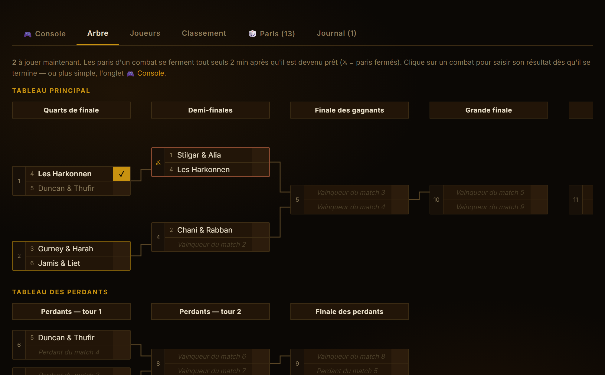
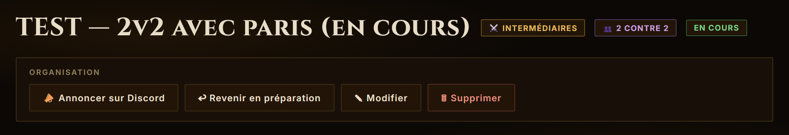
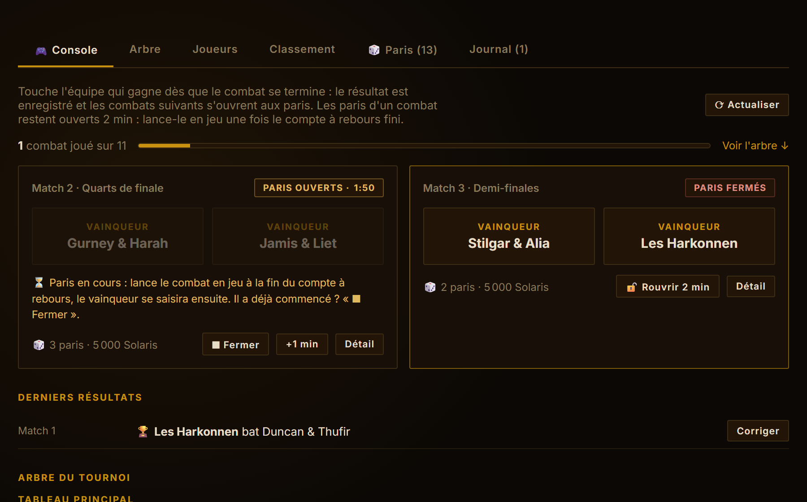
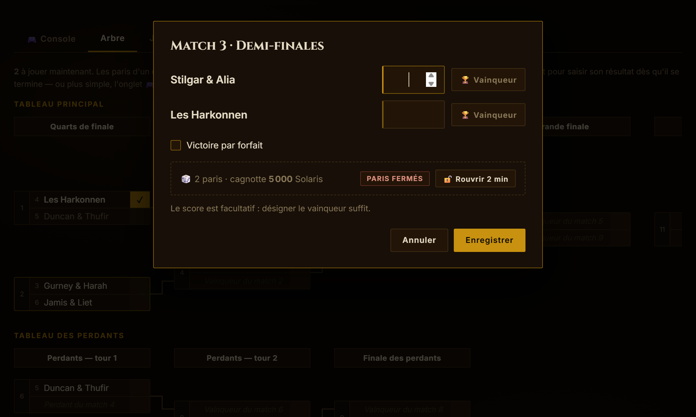

Mener une soirée de tournoi
Ce guide suit une soirée dans l'ordre : la préparation, le lancement, puis la boucle de chaque combat. Pendant la soirée, ton seul travail sur le site est de toucher le vainqueur de chaque combat dès qu'il se termine : les paris s'ouvrent et se ferment tout seuls.
Le site ne connaît les adversaires du combat suivant qu'une fois le résultat enregistré. Tant qu'il manque, ce combat affiche « Vainqueur du match … » et personne ne peut parier dessus. Enchaîner les combats en jeu et saisir les scores à la fin, c'est fermer les paris de toute la soirée. Avec la console, c'est un seul toucher : fais-le dès la fin du combat.

Avant la soirée
- Crée la sortie « Tournoi PvP » sur Discord (commande
/sortie). Les inscrits deviendront les combattants. - Depuis le bouton de l'annonce, ouvre le tournoi sur le site. À la création (ou plus tard avec ✎ Modifier) :
- coche « 🎲 Ouvrir les paris » si tu veux des paris, et règle le temps de pari par combat (2 min par défaut) ;
- choisis un banquier si tu ne veux pas l'être (idéalement quelqu'un qui ne joue pas) ;
- ajoute des co-organisateurs : ils gèrent le tournoi comme toi. Un non-joueur peut ainsi tenir la console pendant que tu arbitres en jeu.
- Onglet Joueurs : importe les inscrits, ajoute les retardataires, compose les équipes. Les membres ne voient encore rien.
- Quand la composition est bonne, clique « 👁 Dévoiler l'arbre aux membres ». Les paris sur le vainqueur du tournoi s'ouvrent à ce moment-là, et le bot poste le message 🎲 Paris sur Discord : on peut parier depuis Discord sans passer par le site.
Le lancement
- « ▶ Lancer le tournoi » fige la liste et l'arbre, ferme les paris sur le vainqueur, et le bot poste sur Discord l'annonce du tournoi puis, juste en dessous, le message des paris. Les paris des combats du 1ᵉʳ tour s'ouvrent aussitôt, pour le temps choisi.
- « 📣 Annoncer sur Discord » poste les combats à jouer maintenant et le lien pour parier. Ce bouton se réutilise pendant la soirée, quand de nouveaux combats deviennent prêts.
- Le message 🎲 Paris du bot se met à jour tout seul pendant toute la soirée (combats ouverts, mises, résultats, podium) : rien à faire de ton côté. S'il a été effacé par erreur, il revient au prochain résultat saisi.

Pendant la soirée : la console
Pendant le tournoi, la page s'ouvre sur l'onglet 🎮 Console, pensé pour le téléphone : rien que les combats à jouer, et deux gros boutons par combat. Sur téléphone, tout le reste s'efface (menus, infos du tournoi, barre d'organisation) : il ne reste que les combats à saisir et l'arbre. Sur ordinateur, l'en-tête complet reste affiché. Chaque combat suit ces trois étapes.
Le combat devient prêt : les paris s'ouvrent tout seuls
Dès que ses deux camps sont connus, ses paris s'ouvrent pour le temps choisi (2 min par défaut), avec un compte à rebours visible de tous. Rien à faire. Au besoin : +1 min (le combat tarde) ou ⏹ Fermer (il commence plus tôt).
Le combat se joue
Les paris se ferment à la fin du compte à rebours, le combat passe en ⚔ dans l'arbre : lance-le en jeu à ce moment-là. Tant que les paris sont ouverts, les boutons « Vainqueur » restent grisés. Le combat a commencé plus tôt ? ⏹ Fermer les débloque.
Il se termine : touche le vainqueur
Dans la console, touche l'équipe qui a gagné. C'est enregistré, avec un bouton ↩ Annuler pendant 10 secondes en cas d'erreur. Les combats qui attendaient ce résultat deviennent prêts : retour à l'étape 1.


Deux combats indépendants peuvent se jouer en même temps (ici les Matchs 2 et 3) : chacun a son compte à rebours, saisis chaque vainqueur dès que son combat se termine.
Fin de soirée
- Après le dernier combat, un bandeau propose « Clôturer le tournoi » (dans la console même, sur téléphone) : le podium est figé.
- « 🏆 Publier les vainqueurs sur Discord » annonce le podium, les lots et la part des paris sans gagnant. Si le tournoi avait des paris, le bot envoie aussi à chaque parieur son solde en message privé, et au banquier le carnet complet (qui lui doit quoi, à qui verser).
- Onglet 🎲 Paris, bloc Banque (visible de l'orga et du banquier) : qui doit quoi, à qui verser quoi. Coche Réglé au fil des échanges en jeu.
Pense-bête
Pour les règles des paris côté joueurs : Comment parier.
← Retour aux tournois